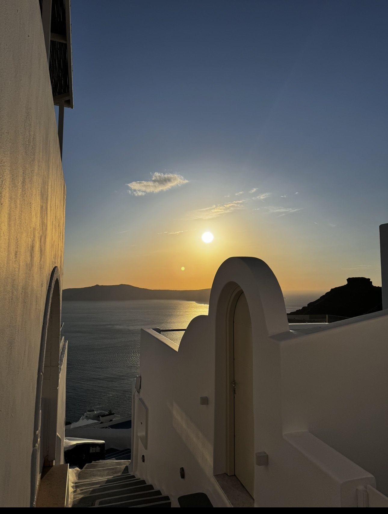
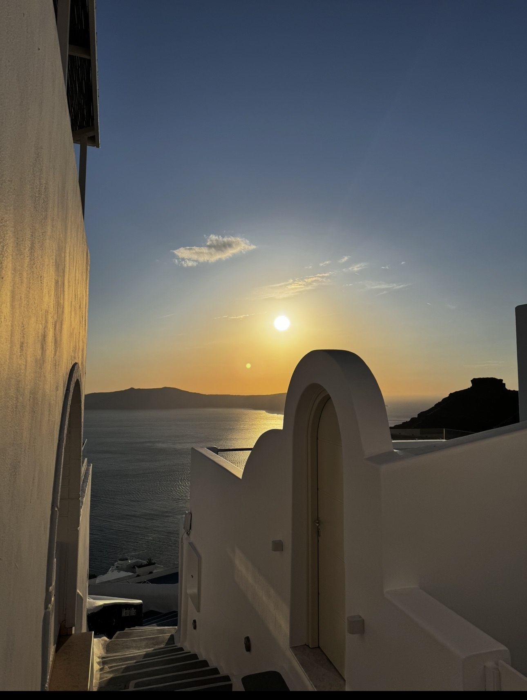
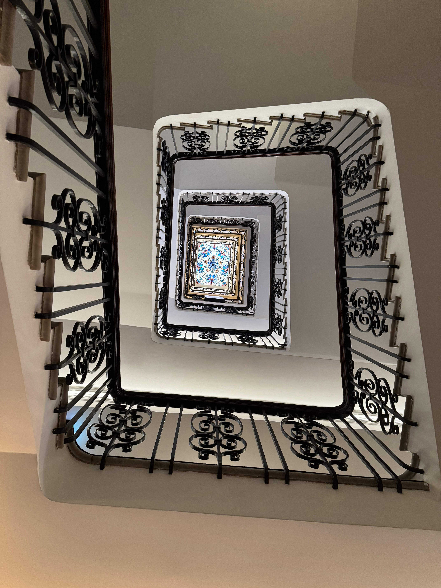
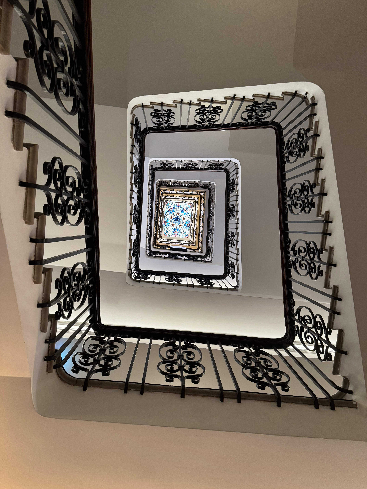

My name is Jade, I am from Prince Rupert, BC. But have grown up in Vancouver.
Along with travel, I love food, photography, and cats.
Even more than that, I love when I can combine them.
There are so many places to see! When I first started out I wasn't sure what to look for first.
My first big solo trip was 10 years ago and these two sites were what helped me the most.
Expedia is easy to navigate and gives many options.
Air bnb Though there is some controversy around it, I have found some wonderful and unique homes to stay in!
As for food? My favourite thing to do is wander the streets and see where the locals are!
 

 


LIFE IS SHORT, EAT DESSERT FIRST!